APTIS SPEAKING – 14 BÀI MẪU TRÌNH ĐỘ B1
Câu trả lời đơn giản, sử dụng khung và từ vựng trong tài liệu ôn tập
Lưu ý: Đây là bài mẫu tham khảo. Học viên có thể thay đổi thông tin cá nhân, địa điểm và trải nghiệm cho phù hợp với bản thân. Với câu hỏi miêu tả tranh, nên quan sát kỹ hình trong đề và điều chỉnh chi tiết nếu cần.
1. What is your favourite season? My favourite season is spring. The weather is warm and sunny. There are many beautiful flowers. It is perfect for outdoor activities.
2. What do you do in your free time? In my free time, I like playing sports and watching films. They are fun and relaxing. They help me reduce stress after work.
3. Describe the room you are in. The room is quite small but comfortable. There is a table, some chairs and a computer. I often study and work in this room.
1. Describe the picture. In the picture, I can see three people, two women and a man. They are doing exercise in a gym. They are wearing sports clothes and look happy. I think they are trying to stay healthy and keep fit.
2. When should people exercise? People should exercise in the morning or after work. They should exercise often, about three or four times a week. It is important to choose a suitable time.
3. Why is exercise good for your health? Exercise is good for our health. It helps us stay active and keep fit. It can also reduce stress and prevent health problems.
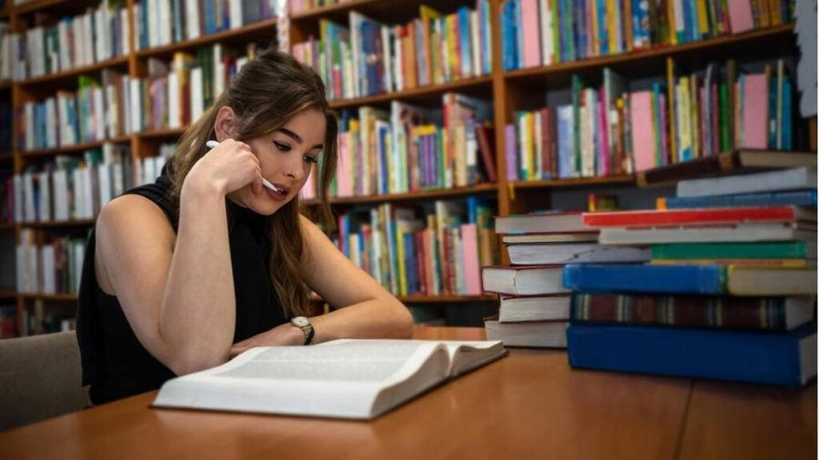 |
|---|
1. Describe the two pictures. The two pictures show people learning in different places. In the first picture, a girl is learning in a library. She looked focused. Around her, I can see a lot of books. In the second picture, a girl is learning in a cafe. She looked relaxed
2. What is the importance of searching for information online? I prefer searching for information online because it is fast and convenient. I can find information anywhere at any time. It also helps me save time.
1. Tell me about a place you have travelled to or a time you explored nature. Last year, I went to Halong Bay with my family. We went there by car. We swam in the sea, ate seafood and took many photos. The place was beautiful and the people were friendly. The weather was nice and perfect for outdoor activities
2. How did you feel? I felt very excited because It helped me relax after busy days and share happy moments with my family
3. What is the importance of understanding local customs when you travel? Understanding local customs is important when travelling. First, it helps us respect local people. Another reason is that we can learn more about their culture. It also helps us avoid problems.
1. Describe the rooms in your house. There are three main rooms in my house: a living room, two bedrooms and a kitchen. They are clean and comfortable. My favourite room is the living room because I can relax there with my family.
2. Who do you usually go to the movies with? I usually go to the movies with my family or friends. We often watch interesting films at the weekend. It is fun and helps us share happy moments.
3. What is the weather like today? Today the weather is quite warm and sunny. It is a beautiful day. The weather is perfect for outdoor activities.
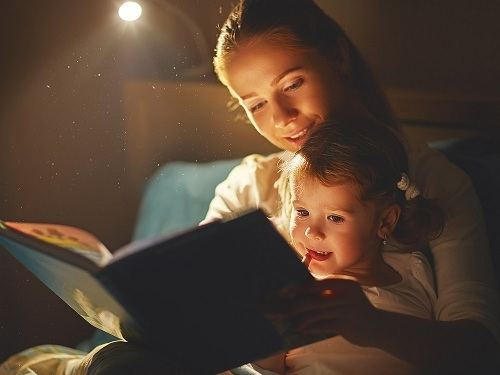
1. Describe the picture. In the picture, I can see a woman and a little girl. I think they are mother and daughter. They are reading a book in the bedroom. They are wearing casual clothes and look happy. I like this picture because it reminds me of my mother.
2. Why is it important to play with children? Playing with children is important because it makes them happy. It helps them develop communication skills. Besides, parents can understand their children better.
3. How should parents spend time together with their children? Parents should spend time with their children every day. They can read books, play games or do sports together. They should listen to their children and share happy moments with them.
1. Tell me what you see in the two pictures. The two pictures show people attending events. In the first picture, some people are having a meeting in an office. The room is small and quiet. In the second picture, many people are having a meeting in a large hall. A person is speaking on the stage
2. Which photo do you prefer? I prefer the first photo because the room is small and quiet. People can communicate with each other more easily. It is also easier to ask questions.
3. Technology makes communication easier. Do you agree? Technology makes communication easier. People can make video calls and send messages anywhere at any time. It helps us save time and keep in touch with family and friends.
1. Tell me about a time you received a gift. Last year, my best friend gave me a beautiful handbag on my birthday. I was very surprised when I received the gift. It was useful and meaningful.
2. Who was the gift from? The gift was from my best friend. She knows what I like, so she chose a beautiful handbag for me. I was very happy and grateful.
3. Do you prefer handmade gifts or gifts bought from a shop? Why? I prefer handmade gifts because they are special and meaningful. People spend time making them, so they show love and care. However, gifts from shops are also useful and convenient.
1. What is the weather like today? Today the weather is sunny and warm. It is perfect for outdoor activities.
2. What do you like to do with your friends? I like going shopping, playing sports and chatting with my friends. We often meet at weekends. It helps me relax and share happy moments.
3. Describe the room you are in. The room I am in is big. There is a table and many desks with computers. Many people are doing the test. Everyone looks focused
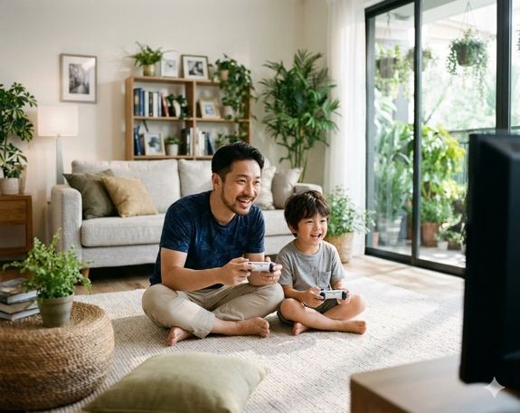
1. Describe this picture. In the picture, I can see two people, a man and a boy. They are sitting on the floor in the living room and playing a game together. They look happy and relaxed. There is a television and some furniture in the room. Behind them, there is a sofa and some plants. I like this picture because it reminds me of my father
2. Do you like playing games? Yes, I like playing games because they are fun and relaxing. I often play games with my friends at weekends. They help us reduce stress.
3. Are games suitable for children, and why? Yes, games are suitable for children if they choose the right games. Games can help children develop thinking skills and learn how to work with others. However, they should not play for too long.
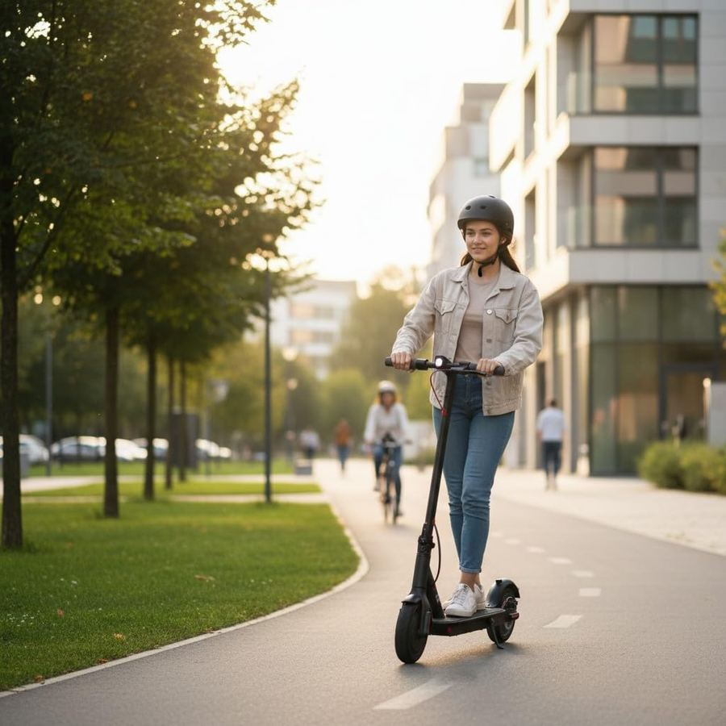 |
|---|
1. Tell me what you can see in these two pictures. The two pictures show people travelling in different ways. In the first picture, a woman is riding a scooter on the road. The weather is very nice. In the second picture, a man is driving a car and talking with his friend
2. What should people take with them when travelling? People should take their phone, money, ID card and some clothes when travelling. They should also take water and medicine. These things are useful and important.
3. Is it a good idea to travel during busy periods? I don't think travelling during busy periods is a good idea. Places are often crowded and transport can be expensive. People may have to wait for a long time. I prefer travelling on quiet days.
1. Tell me about a time when you had to wait an exceptionally long time for something. Last month, I had to wait for a long time at the airport because my flight was delayed. I waited for about three hours. I was travelling with my family, so we talked and had something to eat.
2. How do you feel when you have to wait for a very long time? At first, I felt tired and a little angry because I was in a hurry. After some time, I felt better. I tried to relax and think positively.
3. What should you do while waiting? While waiting, people can read books, listen to music or use their phones. They can also talk to friends or have something to eat. These activities help them feel relaxed.
1. Tell me about your friend. My best friend is Lan. She is friendly and kind. She always helps me when I need. In free time, we often go shopping together. It is fun and relaxing
2. What did you do yesterday? Yesterday, I went shopping with my family. We bought some food at a supermarket near our house. It was convenient and fun.
3. What is your favourite sport? My favourite sport is badminton. I often play it with my friendsin the park near my house. It is fun and good for my health. It helps me stay active and keep fit.
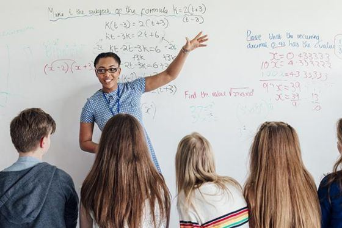
1. Describe this picture. In the picture, I can see a teacher and some students in a classroom. The teacher is standing in front of the class and giving a lesson. The students are sitting and listening to her. They look focused. I think they are learning something useful.
2. Do you often read newspapers? Yes, I sometimes read newspapers, especially online newspapers. I often read them in the morning. They help me update information about the world.
3. What are the benefits of reading newspapers? Reading newspapers is useful. First, people can learn about important events. Another reason is that they can improve their knowledge. It is also a good way to relax.
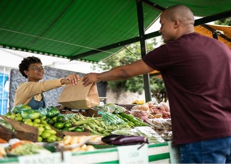 |
|---|
1. Tell me what you can see in these two pictures. The two pictures show people buying food. In the first picture, a man is shopping in a supermarket. In the second picture, a man is buying vegetables at a local market. Both places have many kinds of food.
2. Should you buy food at the market or the supermarket? I prefer buying food at the local market because the food is fresh and affordable. I can save money. However, supermarkets are clean and comfortable, and they offer many products.
3. Why do people like taking pictures with their phones? People like taking pictures with their phones because it is fast and convenient. They can save special moments and share photos with family and friends. It is also easy to use.
1. Tell me about a time when you made an important decision. Last year, I made an important decision to study English more seriously. I wanted to improve my language skills for my job. I made a study plan and practiced every day.
2. How did you feel after making that decision? At first, I felt nervous because I was very busy. However, I felt more confident after making the decision. I was happy because I had a clear goal.
3. What advice would you give to someone who needs to make a decision? I think people should think carefully before making a decision. They should collect information and ask other people for advice. They should choose what is best for their future.
1. Describe your room at home. My room at home is small but comfortable. There is a bed, a desk and a wardrobe. I like it because it is quiet and peaceful.
2. What are you wearing today? Today I am wearing a T-shirt, a pair of jeans and trainers. They are comfortable and suitable for everyday activities. I often wear these clothes when I go out.
3. When did you last go to the cinema? I last went to the cinema two weeks ago. I went with my friends and watched a comedy film. It was very funny and helped me relax.
1. Describe the picture. In the picture, I can see two people in a clothes shop. I think they are a couple. They are looking at some clothes. They are wearing casual clothes and look happy. Behind them, I can see many products in the shop.
2. Tell me about the last time you went shopping. Last weekend, I went shopping with my sister at a shopping mall. I bought a shirt and a pair of jeans. The clothes were beautiful but a little expensive.
3. Do you prefer shopping online or in stores? I prefer shopping online because it is convenient. I can stay at home and buy things anywhere at any time. I can also compare prices easily. However, shopping in stores is better when I want to try on clothes.
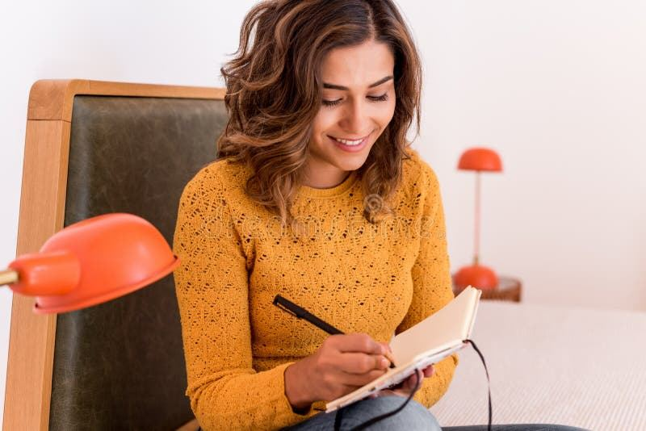 |
|---|
1. Tell me what you see in the two pictures. The two pictures show people writing notes. In the first picture, a woman is writing in a notebook. In the second picture, a man is writing on a tablet. Both people look relaxed.
2. Where do you usually prefer to put your notes? I usually put my notes in a notebook or on my phone. I prefer using a notebook because it is easy to read and I can remember things better.
3. What is the importance of making plans in advance? Making plans in advance is important. It helps people manage their time and finish their work on time. It also helps them avoid problems and feel less stressed.
1. Tell me about a time when you had to plan something important. Last month, I had to plan a birthday party for my mother. I invited some family members and friends. I prepared food, bought a cake and decorated the house. The party was simple but lovely.
2. How did you feel during the planning process? At first, I felt a little stressed because I had many things to do. Then I made a list and everything became easier. In the end, I felt happy and proud of myself.
3. Why do you think planning is important in our lives? Planning is important because it helps us manage time and money. We can prepare everything carefully. It also helps us reach our goals and avoid problems.
1. Tell me about your job I am a doctor. I work for a hospital in Hanoi. I love my job because I can help many people
2. What do you like to do in your free time? In my free time, I play sports. I often play tennis with my friends at the weekend. It is fun and good for my health. It helps me relax after work and share happy moments with my friends.
3. Tell me about your favourite singer? My favourite singer is Son Tung MTP. He is handsome and sings very well. He is friendly and kind. He always help other people
1. Describe the picture. In the picture, I can see two girls sitting outdoors and using his smartphone. They are looking at the screen. They are wearing casual clothes and looks relaxed. Behind them, I can see some buildings. The weather is very nice. It is sunny and perfect for outdoor activities.
2. What do you usually use your phone for? I usually use my phone to make calls, send messages and search for information. I also use it to take photos and study English. It is very convenient.
3. Do you think smartphones make communication easier? Yes, I think smartphones make communication easier. People can send messages and make video calls anywhere at any time. They can keep in touch with family and friends. It is fast and convenient.
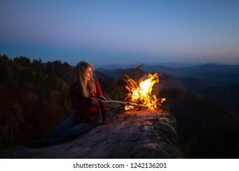 |
|---|
1. Tell me what you see in the two pictures. The two pictures show people in different places. In the first picture, a man is sitting in bed and using his mobile phone at night. In the second picture, a girl is sitting by a fire in the forest at night.
2. Do you think sleep is important? Yes, sleep is very important because it helps our body and mind relax. It gives us energy for the next day. Good sleep also helps us stay healthy.
3. Is spending the night in places like this attractive? I think spending the night in an unusual place can be attractive because it is interesting and exciting. People can have new experiences and share happy moments with friends. However, the place should be safe and comfortable.
1. Tell me about a time when you met a foreign person. Last year, I met a foreign visitor at a hotel. He was from Australia and asked me for directions. I helped him find the place and we talked for a few minutes. It was a nice experience.
2. How did you feel during that experience? At first, I felt a little nervous because my English was not very good. Then I felt more confident because he was friendly and patient. I was happy that I could help him.
3. Why do you think meeting people from different countries is important? Meeting people from different countries is important. We can learn about different cultures and improve our language skills. We can also make friends and broaden our minds.
1. Tell me about your friend. My friend is a very friendly and honest person. She always helps me when I have problems. We often play sports and go shopping together.
2. What did you do yesterday? Yesterday, I stayed at home in the morning and did some housework. In the afternoon, I went shopping with my family. It was a relaxing day.
3. How did you come here? I came here by car. It is fast and convenient. I left home early and came here at 7AM.
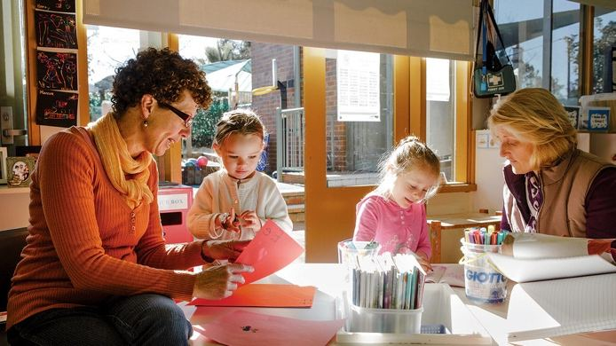
1. Describe the picture. In the picture, I can see some people, two old people and two children in the room. They are painting and doing art together. They are wearing casual clothes and look happy. On the table I can see colors and cards. The weather outside the window is very nice. It is sunny and good for outdoor activities. I like this picture because I love painting too
2. What were some of your favourite childhood games? When I was a child, I liked playing hide-and-seek and badminton with my friends. We often played in the park near my house. It was fun and we shared many happy moments.
3. What is the importance of spending time with children? Spending time with children is important because it makes them happy. It helps them develop communication skills and become more confident. Adults can also understand children better.
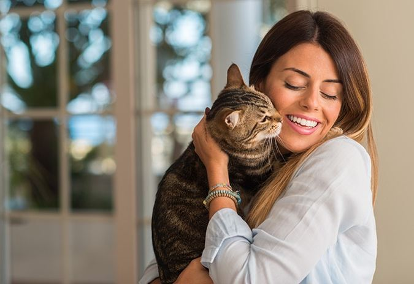 |
|---|
1. Describe the two pictures. The two pictures show people spending time with animals. In the first picture, a woman is holding a cat in the living room. In the second picture, a girl is holding a snake over her shoulder. The people in both pictures look happy
2. Do you like animals? Yes, I like animals because they are lovely and friendly. I especially like dogs. They can make people feel happy and less lonely.
1. Tell me about a time you helped someone. Last month, I helped an old woman carry her shopping bags. I saw her near a supermarket. She looked tired, so I offered to help her take the bags home. She thanked me.
2. How did you feel when you helped someone? I felt very happy and useful because I could help someone. It was a small action, but it made me feel proud of myself.
3. Why are people now reluctant to help others? Some people are reluctant to help others because they are busy or afraid of problems. Some people do not trust strangers. I think we should help others when it is safe and possible.
1. Tell me about your friend. My best friend is called Hoa. She is kind, honest and humorous. We often meet at weekends and talk about our lives.
2. Describe the room you are in. The room I am in is clean and quiet. There is a desk, a computer and some books. I like this room because I can focus on my work.
3. Who is your favourite singer? My favourite singer is My Tam. She is a famous Vietnamese singer. She has a beautiful voice and is very kind. I really like her songs.
1. Describe the picture. In the picture, I can see a girl sitting in the classroom. She is looking outside the window. She is wearing a white shirt and looks happy. On the table, I can see a book. In the room I can see many tables. I like this picture because it reminds me of my school days.
2. How do you usually make plans? I usually make plans in a notebook or on my phone. I write down important tasks and decide when to do them. It helps me manage my time.
3. Why is planning necessary? Planning is necessary because it helps us organise our work. We can save time and avoid problems. It also helps us reach our goals.
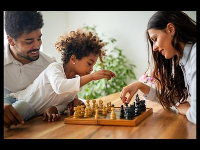 |
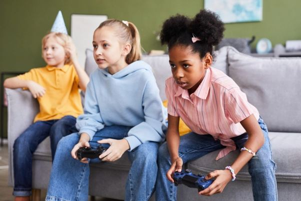 |
|---|
1. Tell me what you see in the two pictures. The two pictures show people playing different games. In the first picture, parents and son are playing chess together. They look relaxed. In the second picture, some girls are playing computer games together in the living room. They look focused
2. Do you prefer playing chess or video games? Why? I prefer playing chess because it helps me think carefully and improve my thinking skills. It is also a good way to relax with friends.
3. Are outdoor activities important? Why? Yes, outdoor activities are important. They are fun and good for our health. They help people stay active, keep fit and enjoy fresh air.
1. Tell me about a time you changed your job or school. A few years ago, I changed my school. I moved to a new school because my family moved to another area. I had to meet new teachers and make new friends. It was a big change in my life.
2. How do you feel when a major change comes into your life? At first, I felt nervous because everything was new. After a few weeks, I felt better because my classmates were friendly. I became more confident.
3. Is change good for society? I think change is good for society because it brings new ideas and better ways of doing things. It can improve education, technology and people's lives. However, people need time to get used to changes.
1. Tell me about your friend. My friend is very kind and helpful. We have known each other for many years. We often go shopping and play sports together.
2. Describe the room you are in. The room I am in is comfortable and quiet. It has a desk, a chair and a computer. I often use it for studying and working.
3. Who is your favourite singer? My favourite singer is My Tam. She is famous in Vietnam and has a beautiful voice. She is friendly and kind-hearted. I really admire her.
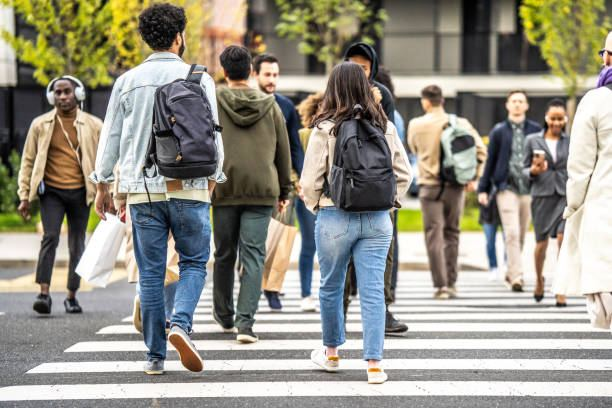
1. Describe the picture. In the picture, I can see many people walking on the street in a busy city. The streets look crowded. In the background of the picture, I can see some buildings and trees. The weather is very nice. it is sunny and perfect for our activities. I like this picture because the city is exciting but a little noisy.
2. What do you think about living in a crowded city? I think living in a crowded city has both advantages and disadvantages. It is convenient because people can find good jobs and enjoy many services. However, it is noisy and polluted.
3. Why do many people hate crowded places? Many people hate crowded places because they are noisy and stressful. People may have to wait for a long time. It can also be difficult to move around.
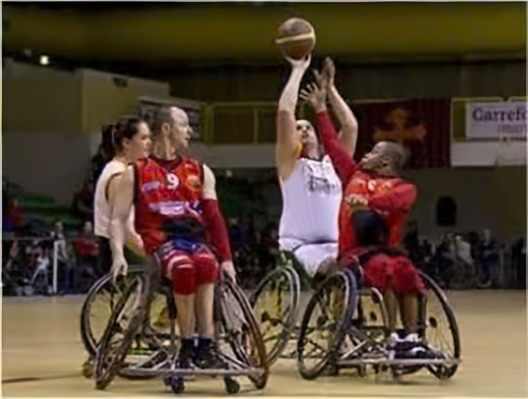
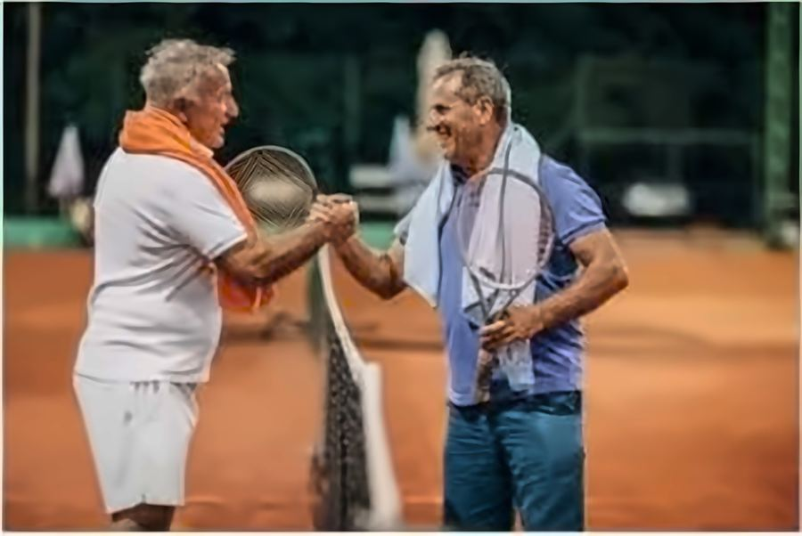
1. Tell me what you see in the two pictures. The two pictures show people playing different kinds of sports. In the first picture, I can see some people playing basketball in their wheelchairs. Behind them I can see many people. In the second picture I can see two old people. They are holding tennis racks and shaking hands. Maybe they have finished the game.
2. What are the benefits of indoor and outdoor sports?
Both indoor and outdoor sports have different attractions, depending on people’s interests. Some people like indoor sports because they can do exercise in any kind of weather. Some people prefer outdoor sports because they can enjoy fresh air.
3. Do you think that the main purpose of playing a game is to win? No, I don't think winning is the main purpose of playing a game. Games are also about having fun, learning skills and making friends. People should enjoy the activity.
1. Tell me about a time you did or saw someone do an extreme sport. Last year, I watched my friend ride a mountain bike down a difficult path. It was an extreme sport and looked dangerous. Many people were watching him. He finished safely.
2. How did you feel? I felt nervous when I watched him because the path was difficult. However, I was excited and proud of him when he finished.
3. Should adults allow children to play extreme sports? I think children should not be allowed to play extreme sports because it is dangerous and they are not strong enough. They may have accidents
1. Tell me about the city you live in. I live in Hanoi. It is a big and exciting city. There are many shops, restaurants and beautiful places. However, the streets are sometimes crowded and noisy.
2. What's the weather like today? Today the weather is warm and sunny. It is perfect for outdoor activities
3. Tell me about a time you received a gift. Last year, my friend gave me a book on my birthday. I was very surprised and happy. It was a useful gift because I love reading.
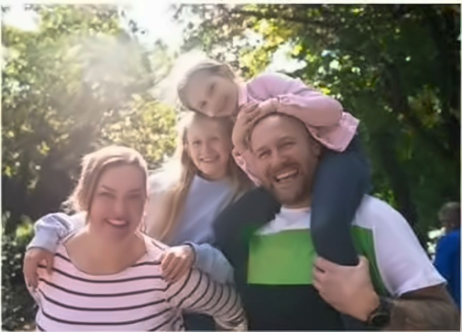
1. Describe the picture. In the picture, I can see some people doing an outdoor activity. They are outside and enjoying their time together. They are wearing casual clothes and look happy. The weather seems nice. I think they enjoy nature and fresh air.
2. What outdoor activities do you usually participate in? I usually go walking, cycling and playing badminton outdoors. These activities are fun and good for my health. They help me stay active and keep fit.
3. Do you enjoy outdoor activities? Yes, I enjoy outdoor activities because I can enjoy fresh air and relax. They are good for my health. I can also spend time with family and friends.
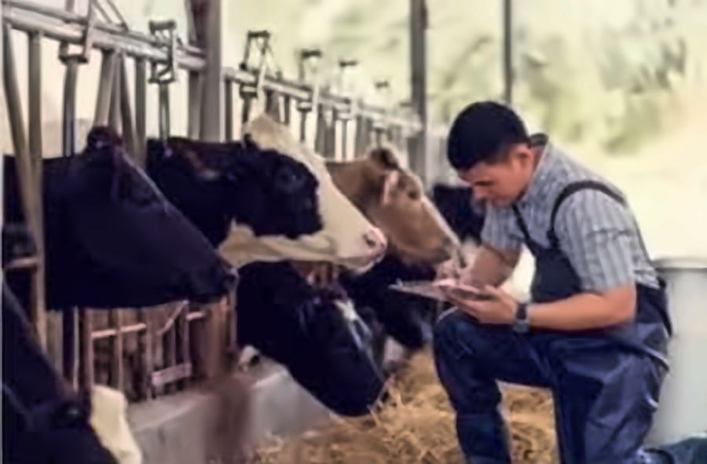
1. Tell me what you see in the two pictures. The two pictures show people working in different places. In the first picture, some people are working in an office. They are looking at the laptop. In the second picture, I can see a man working on the farm with some cows. He is writing something
2. Do you think technology is really important? Yes, technology is very important in modern life. It helps people work faster and communicate easily. It also provides useful information and makes our lives more convenient.
1. Tell me about a time you experienced a piece of entertainment. Last month, I went to a music show with my friends. There were many people and the music was exciting. We listened to songs and took photos. It was a wonderful evening.
2. How did this experience make you feel? I felt very excited and relaxed. The music was enjoyable and I could share happy moments with my friends. I really wanted to go to another show.
3. How does technology influence entertainment? Why? Technology has changed entertainment in many ways. People can watch films, listen to music and play games online. It is convenient because they can enjoy entertainment anywhere at any time.
1. What do you want to do with your family? I want to travel with my family and visit beautiful places. We can go sightseeing, eat delicious food and take photos. It helps us relax and share happy moments.
2. Describe a typical day. A typical day for me starts early in the morning. I have breakfast, go to work and do my daily tasks. In the evening, I spend time with my family and relax.
3. Tell me about a time you received a gift. Last year, my husband gave me a beautiful bag for my birthday. I was very happy because it was useful and meaningful. I thanked him for the lovely present.
1. Describe the picture. In the picture, I can see a woman standing on the balcony of a building. She is holding a notebook. The notebook is yellow. She is wearing formal clothes and looks happy. Behind her, I can see many high buildings. The view is beautiful. I think she enjoys living there.
2. Why do people like living in high-rise buildings? People like living in high-rise buildings because they are convenient. They often have lifts, security and good facilities. People can also enjoy beautiful views of the city.
1. Tell me what you see in the two pictures.
The two pictures show people doing different jobs. In the first picture, many people are working in a factory. They are working hard. In the second picture, I can see a man. He is working in an office with a laptop. The office looks clean and quiet
2. What are the differences between those two jobs?
Office work is usually quieter and less physically demanding. Factory work can be noisy and people may have to stand for long hours. However, both jobs help people earn money.
3. What is your current job? I am an English teacher. I teach students and help them improve their English skills. I enjoy my job because it is useful and meaningful.
1. Tell me about a time you received positive feedback. Last month, one of my students gave me positive feedback after my lesson. She said the lesson was useful and easy to understand. I was very happy to hear that.
2. How did you feel when you received positive feedback? I felt proud and encouraged because my hard work was appreciated. It gave me more confidence and motivation to improve my teaching.
3. Why do people like receiving positive feedback? People like receiving positive feedback because it makes them feel happy and confident. It shows that other people value their work. It also encourages them to do better.
1. What do you want to do with your family? I want to travel with my family and visit new places. We can enjoy fresh air, eat delicious food and take photos together. It is a good way to relax.
2. Describe a typical day. A typical day for me is quite busy. I get up early, have breakfast and go to work. After work, I do some housework and spend time with my family.
3. Tell me about a time you received a gift. Last year, I received a watch from my husband on my birthday. It was beautiful and useful. I felt very excited and grateful.
1. Describe this picture. In the picture, I can see some people on the street. They are listening to music. A man is playing the guitar. One man is sitting in his wheelchair. A dog is standing nearby. Everyone looks happy. The weather in the picture is very nice and perfect for outdoor activities.
2. When and where do you usually listen to music? I usually listen to music at home or when I am travelling. I often listen to music in the evening because it helps me relax after a busy day.
3. What do you think about playing or listening to music in public places? I think listening to music in public places is acceptable if people use headphones. Loud music can disturb other people. We should respect people around us.
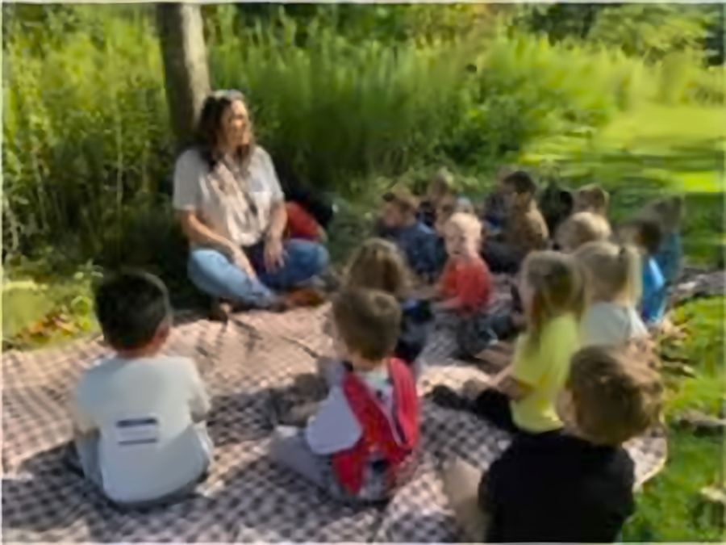
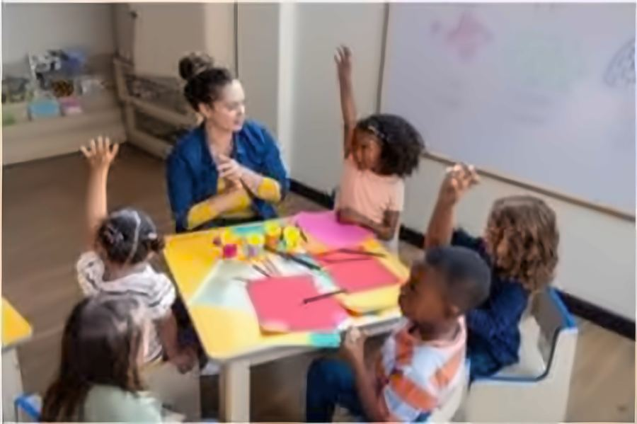
1. Tell me what you see in the two pictures. The two pictures show people learning in different places. In the first picture, students are learning in the park. Around them, there are many trees. The weather is very nice. In the second picture, some children are learning in a classroom. They are making some art work
2. Do you prefer learning in the classroom or outdoors? I prefer learning in the classroom because it is quiet and I can focus on my lessons. I can also ask my teacher questions and work with other students.
3. Should students spend less time in school? Why or why not? I don't think students should spend much less time in school. School helps them improve their knowledge and develop social skills. However, they also need free time to relax and play sports.
1. Tell me about a time you cooperated to complete a task. Last year, I cooperated with my colleagues to organise an English event. We shared the work, prepared materials and welcomed students. Everyone worked hard and the event was successful.
2. How did you feel while cooperating? I felt happy and excited because we worked well as a team. We helped each other and finished the work on time. It was a useful experience.
3. Where or how do you think cooperation should take place? Cooperation should take place at school, at work and in the community. People can share ideas, solve problems and learn from each other. It helps everyone achieve better results.
1. What do you want to do with your family? I want to have a picnic with my family. We can prepare some food, play games and take photos. It will be fun and relaxing.
2. Describe a typical day. A typical day for me starts early. I have breakfast and go to work. In the evening, I have dinner with my family and prepare for the next day.
3. Tell me about a time you received a gift. Last year, I received a lovely dress from my sister. She gave it to me on my birthday. I was very happy because it was beautiful and suitable for me.
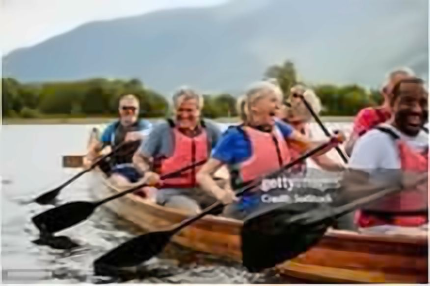
1. Describe this picture. In the picture, I can see some people. They are old. They are rowing a boat. They are wearing life jackets. They look happy. Behind them, I can see many trees. The weather is very nice. I like the picture because I love outdoor activities,
2. Which activity do you prefer? I prefer outdoor activities because I can enjoy fresh air and nature. They are good for my health and help me relax. I also have a chance to meet other people.
3. What do you think are the benefits of this activity? Outdoor activities are good for our physical and mental health. They help us stay active and keep fit. They also reduce stress and allow us to share happy moments with friends.
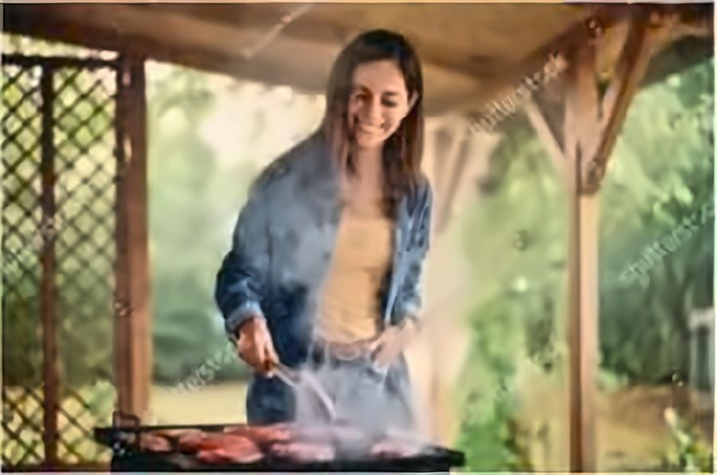
1. Tell me what you see in the two pictures. The two pictures show people preparing food. In the first picture, a girl is cooking in the garden. She is having a barbecue. In the second picture, two people are preparing food together in the kitchen. They look focused and interested.
2. Why do some people find cooking a challenge? Some people find cooking a challenge because they are not good at cooking and they are busy. They don’t have time for cooking.
3. What is the difference between cooking alone and cooking with others? Cooking alone is quieter and people can choose what they want to make. Cooking with others is more enjoyable because people can share ideas and help each other. It is a good way to share happy moments.
1. Tell me about a time you learned a new skill and the challenges you faced. Last year, I learned how to use a new computer programme for my work. At first, it was difficult because I did not know how to use it. I watched online lessons and practised every day. After some time, I could use it well.
2. How did you feel when you learned that skill? At first, I felt nervous and a little frustrated. However, I felt more confident when I improved. I was proud of myself because I had tried my best.
3. Why do some people like to challenge themselves by learning something new? People like learning new things because it helps them improve their knowledge and skills. It can make them more confident and independent. It is also useful for their jobs and daily lives.
1. Tell me about your first school. My first school was a primary school near my home. It was small but beautiful. I had many friends there and we often played games together. I have good memories of that school.
2. Tell me about your friends. I have many friends. They are friendly, kind and helpful. We often talk, go shopping and play sports together. I really enjoy spending time with them.
3. What are you wearing today? Today I am wearing a T-shirt and a pair of jean. I like this outfit because it is beautiful and comfortable. It makes me feel more confident.
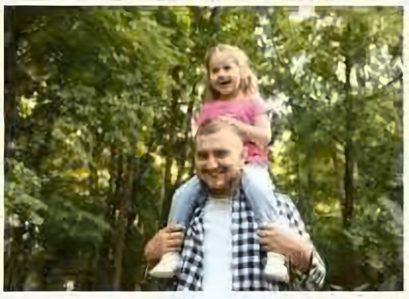
1. Describe the picture. In the picture, I can see two people, a man and a girl. I think they are father and daughter. The man is carrying the girl on his shoulders. They are wearing casual clothes and they look happy.
2. When should people exercise? People should exercise often in the morning. They can walk or run in the park near their house. Here they can enjoy fresh air
3. Why should people exercise? People should exercise because it is good for their health. It helps them stay active, keep fit and prevent health problems. It can also reduce stress.
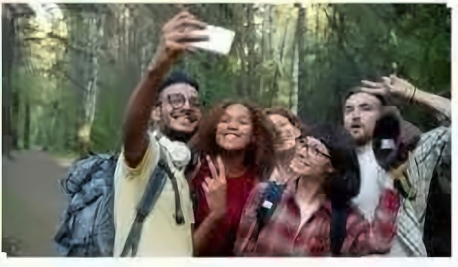
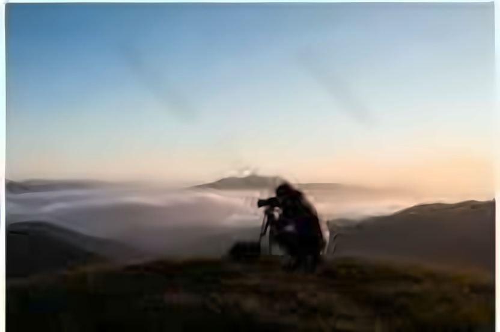
1. Describe the two pictures. The two pictures show people taking photos. In the first picture, a group of friends are taking a selfie in the forest. They look happy. In the second picture, a man is taking a photo on the mountain. The view is very beautiful.
2. Which method do you prefer for taking photos? I prefer taking photos with my phone because it is fast and convenient. I can take photos anywhere at any time. I can also share them with my family and friends.
3. Why do people like taking photos with family or friends? People like taking photos with family or friends because they can save happy memories. They can look at the photos in the future and remember special moments. It is also a good way to share experiences.
1. Tell me about a time you helped someone. Last month, I helped my neighbour carry some heavy bags. She was an old woman and looked tired. I offered to help her take the bags into her house. She thanked me.
2. How did you feel when you helped someone? I felt happy and proud because I could help someone. It was a small action, but it made a difference to her. I believe helping others is meaningful.
3. Why are people now reluctant to help others? Some people are reluctant to help others because they are busy or afraid of getting into trouble. Some people do not trust strangers. However, I think we should help when it is safe and possible.